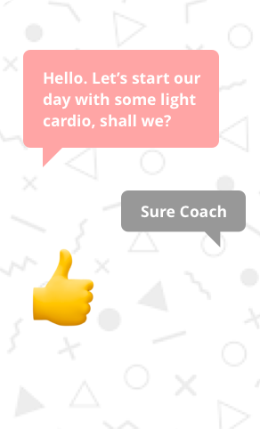

- 

Opportunity
In order to scale up our coaching operations at GOQii, we needed to improve the effifiency of each coach to be able to manage more and more customers.
There was a perception problem as well regarding coach sentiment. We were receiving complaints on the product’s performance.
There were no clear metrics define for product success.
Solution
For subjective elements, such as acceptance of the product by the coaches, we started collecting ratings and reviews on the product. This helped us establish objective parameters to judge improvements in the system.
We implemented task management system to automatically generate a task list for the coaches to work on.
We implemented a violation tracking system to help managers mitigate risks.
We moved their auditing system from spreadsheets to our system so that we could collect 360 degree performance data on each coach.
We launched a mobile application to improve message turn around time.
Where I added value
Wireframing the solutions
Hands on front end development (due to lack of resources)
When I joined, the team was working on optimisation tasks (to improve the loading speed of the product). But they had not measured the current load time, nor was there any success parameters in place.
The engineering team needed direction and proper goal setting.
I devised a 4-pillar framework for understanding the main themes for product success.
Impact
Improved coach ratings on the product.
Improved coach efficiency 300% by task list generation and task automation.
Improved management tools to give managers a complete picture of coach performance
Optimised coaching costs by improving incentives structures with the help of technology.